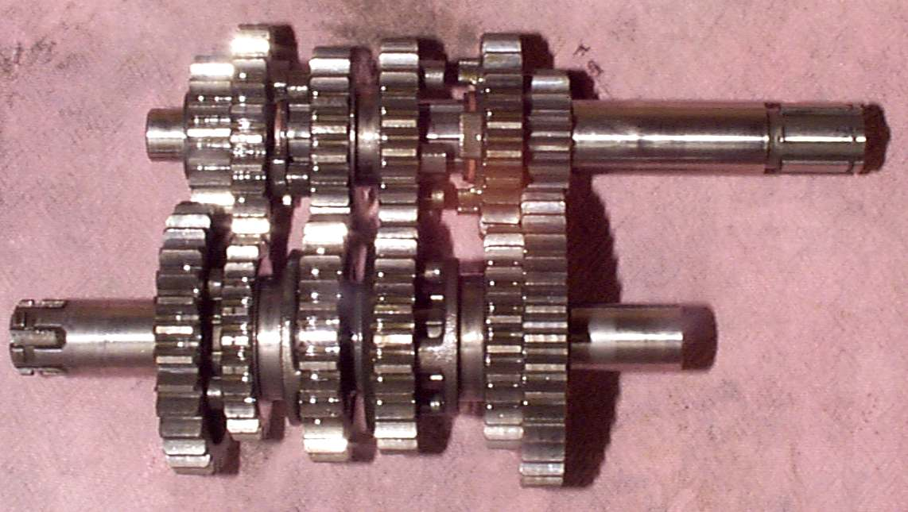
GEARBOXES
Anyway you go, you need some kind of Gearbox to keep the engine RPM within it's power band, while providing the bike with a good acceleration, and speed range. While there are lots of styles and types of gear boxes, I think they all seem to boil down to three different crankcase types.
- Horizontally split...
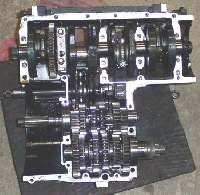
...The crankcase has a seam on the horizontal plane. All multi cylinder I have seen are split Horizontally. This means you do not have to take the Cylinder Head off to replace a gear.
- Vertically split...
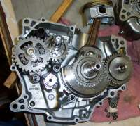
...The crankcase has a seam on the vertical plane. Most single cylinder engines are split vertically but not all of them. The Honda XR/XL175 comes to mind.
- Cassette type...
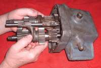
...The gears are loaded in from one side. Like a Cassette tape. Triumph, BSA, and Harley-Davidson Sportsters have used this style of Gearbox.
Back in the day, say before mid 1950s, the Gearboxes were separate from the engines on a lot of machines but now-a-days the engines and Gearboxes are all one unit.
Most all of the Gearboxes on motorcycles are "constant mesh". That means all the gears are constantly meshed with one another and are always spinning. Because of this, there are no synchros to speed up the gears when they engage, like there are in automotive Gearboxes.
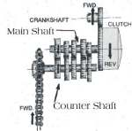 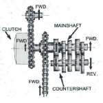
The sliding gears are moved back and forth by Shifter Forks which in turn are moved by a shifter drum. The Shifter Forks are usually attached to the Shifter Drum or move in a groove machined in the Shifter Drum. This drum is turned or rotated, through different styles of linkages, by the gear Shifter Shaft Linkage.
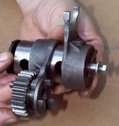 Shifter Drum |
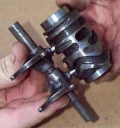 Shifter Drum with Grooves |
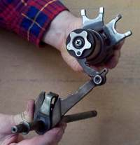 Shifter Shaft Linkage |
As the gears move back and forth
they lock the main shaft and counter shaft together thru each set of gears, giving us 1st, 2nd, 3rd, etc. A few use a grooved plate to move the shift forks.
While the design of the Gearbox is complicated, fixing, repairing, or overhauling it really isn't. However, there are a few things to watch for.
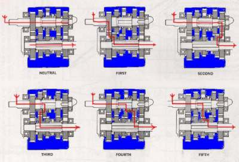
Always put everything back in EXACTLY the same position as when you removed it. Many shafts or gears can go in backwards and work just fine, BUT you will have reversed the wear pattern, and the parts will have to re-wear themselves into each other. This increases the wear on your parts for no good reason. So if for nothing more than the general principal of the thing, always reinstall parts in the exact position they were in. If necessary mark them with a Marks-a-lot felt tip pen.
When you pull the gears out, DON'T just dump the gears out on the floor like a sack of potatoes. Pull them out gently, as a unit. On some it is best to pull both shafts, drum and the shift forks together. On others it's best to remove the shafts that hold the shifter forks and remove them first, then the drum, and then the gear clusters. On some makes the gears are kept on the shafts by circlips. On others, the gears can fall right off. Often there are shims ( thin, large washers ) on the ends of the shafts. These shims are used to position the gears and take up any side play, so look for them when you pull any shaft out. They tend to stick to the bearings. You may need to clean the part of the counter shaft that is outside the crankcase. You know, where the countershaft sprocket is. Get all that rust and dirt off it, so it will slide on out through the bearing.
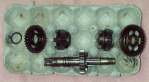
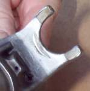
If the gear has broken teeth it is a good idea to replace both it and its mate on the other gear shaft. Normally broken teeth make quite a bit of noise. Sometimes, there is a lot of noise, but when you get the gear out... nothing looks broken. Look for a bent tooth, or a tooth with a bit of debris stuck on it. It could be a bit of steel, aluminum, who knows what, it can still make noise.
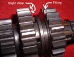
All the books say replace them... but man... if I did that, I'd have to replace them all. That would cost a lot of cash. So it's a judgment call you will have to make. If they are really bad, replace them. Just be sure to take into account the cost of the gears verses the worth of the machine and its power output. Expensive, high power machines deserve and require good gears, but a $500 machine does not need $500 worth of new gears.
Gearbox Bearings are another judgment call. They run in an oil bath and rarely wear out. Even if the oil level is run low the gear box bearings probably get more oil than the average 2/stroke main bearing. As with gears if they look OK they Probably are. If it's a high power, expensive, machine...put in new. Cheapo machine? Just live with them.
Now, speaking of living with it...sometimes a Gearbox will loose a gear... bang, it's gone. Now, you can run through all the gears, everything sounds OK, but one of the gears is just not there anymore. Can you ignore it and just drive on? I think you can. Yes, there is always the risk that whatever broke could get jammed in other parts of the Gearbox, locking everything up and doing a lot of damage. Do you want to risk it? I think the odds are good that you will not have any problems, except your missing a gear. But understand, there is a RISK.
OK, now you assemble the gear clusters and put them and everything else back in the crankcases, with lots of oil, of course. Now you try to shift through all the gears, and man, it shifts sort of hard. Did you do something wrong? Maybe not. If you were careful on assembly and the gear shafts turn easily, just make sure you can shift thru all the gears. It helps to spin the gear shafts by hand as you shift to help things slide into position. If it's just a bit hard, kind of chunky, so to speak, you are OK. When it's spinning fast, it will work just fine.
AUTOMATIC TRANSMISSIONS
Yes, there are motorcycles with Automatic Transmissions. Honda had a 750cc and a 400cc, Suzuki had a 450cc, and Moto Guzzi had a 1000cc automatic. These were true automatics.
Most were made in the late 70's, early 80's and had a 2-speed gear box with a torque converter. I've ridden the Honda 750 and it was...well... automatic. With two speeds it was no ball-of-fire, but it was OK. You don't see them around much and as I have never worked on one, I probably shouldn't try to tell you how to fix one.
Rokon Had a 340cc dirt bike with a snowmobile type, belt drive, transmission with drive and driven clutches. Rokon also has a two wheel drive, backwoods, motorcycle with the same type of clutch. Works quilt well once you get used to it. It will go just about anywhere.
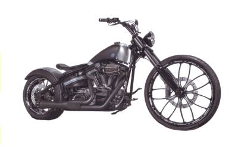 |
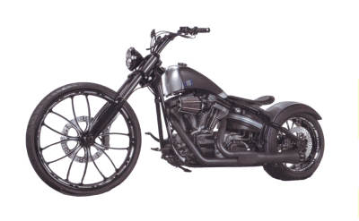 |
Copyright © 1999-2015 dansmc.com. All rights reserved.